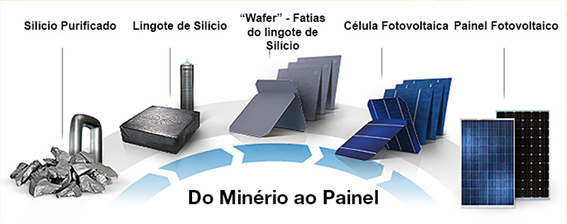
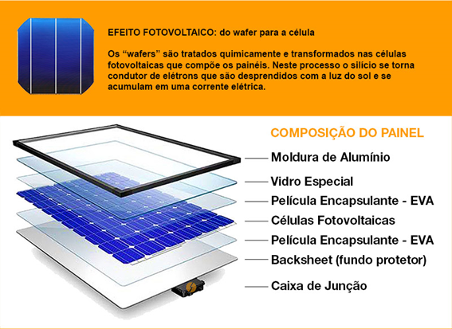
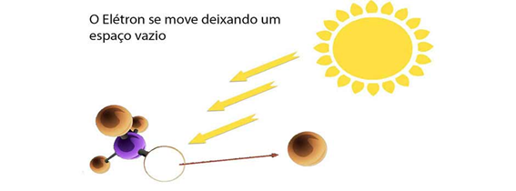
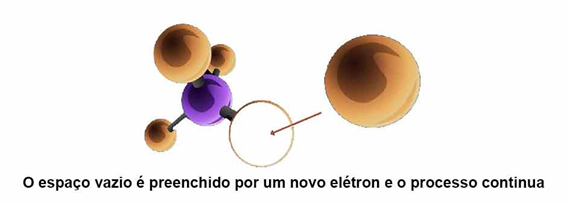
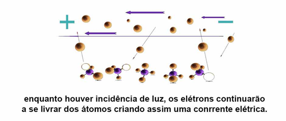
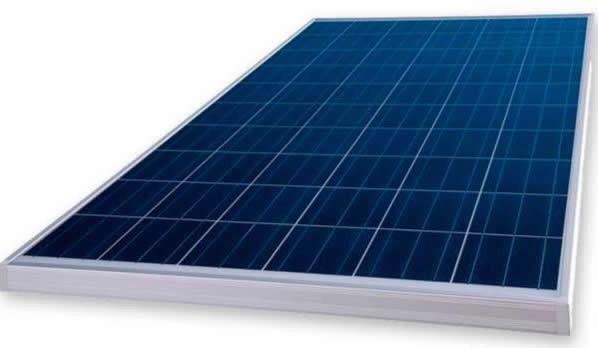

 
Funcionamento da célula fotovoltaica
Usa-se dois tipos de silícios para a geração de cargas positivas e negativas, o silício combinado com o elemento boro e assim gera carga positiva e combinado com o fosforo ele gera a carga negativa. Após combinarmos ambos os materiais, em forma de sanduiche ao ser exposto ao sol, os fótons atingem a célula e inicia-se uma reação de alguns elétrons que circundam os átomos de se desprendam, estes elétrons livres irão através da corrente elétrica da parte do silício que está com menos elétrons.


No período enquanto a célula é irradiada, os elétrons fluíram em direção constante, deixando átomos e indo lacunas em outras cadeias diferentes, este fluxo gera uma corrente elétrica chamamos esse ciclo de energia solar fotovoltaica.

Construção de painel fotovoltaico
O painel é composto de varias células cuidadosamente colocadas em série, conectadas por uma fita condutora essas células são cobertas por uma fina camada de vidro ou prime selante ambos os materiais com antirreflexo e antiaderente.
Energia Solar na atualidade
Atualmente a energia solar vem sendo muito utilizada a nível global, pois tem sido mais fácil o acesso, à tecnologia de células mais eficientes, finas e leves para a confecção de painéis. Existe uma grande quantidade de empresas brasileiras que vendem, instalam, fazem manutenção e ajudam na aprovação de financiamento para aquisição de quais quer quantidade de painéis solares, indo de painéis só para a iluminação de um quiosque até o fornecimento de energia para casas inteiras não modificadas para energia solar. A Aneel, disponibiliza em seu site diversos materiais que explicam e orientam as melhores práticas para as instalações e aplicações da energia solar e normatiza a distribuição ou redistribuição.
